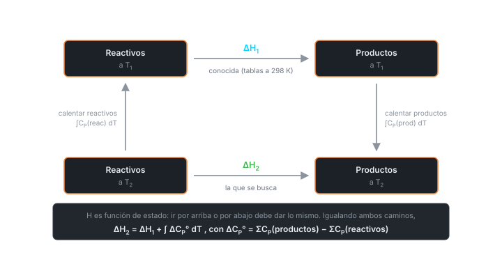

Clase 8: Ley de Hess y Ecuación de Kirchhoff
Dos consecuencias de que sea función de estado: la ley de Hess, que permite armar reacciones imposibles de medir sumando otras que sí lo son, y la ecuación de Kirchhoff, que traslada un calor de reacción a otra temperatura.
Temas que cubre
- Ley de Hess: el cambio de entalpía es el mismo en un paso o en varios
- Ejemplo canónico: frente a la combustión directa
- Reglas de manipulación: invertir una reacción, multiplicarla por un factor, sumarlas
- Aplicación: obtener de reacciones que no se pueden medir directamente
- El problema de la dependencia del calor de reacción con la temperatura
- Construcción del ciclo termodinámico para reactivos y productos
- Definición de como productos menos reactivos
- Ecuación de Kirchhoff en forma integral y en forma simplificada
Conceptos clave
Ley de Hess
Cuando los reactivos se convierten en productos, el cambio de entalpía es el mismo si la reacción ocurre en un paso o en una serie de pasos. No es una ley nueva: es exactamente lo que significa que sea función de estado.
Para qué sirve
es imposible de medir limpiamente — siempre se forma algo de . Pero las combustiones completas de C y de CO sí se miden, y restándolas se obtiene el dato buscado.
Álgebra de reacciones
Invertir una reacción cambia el signo de . Multiplicarla por multiplica por . Sumar dos reacciones suma sus . Con estas tres reglas se arma cualquier reacción objetivo a partir de datos tabulados.
El ciclo de Kirchhoff
Para pasar de (a ) a (a ) se construye un camino alternativo: enfriar los reactivos de a , reaccionar a , y calentar los productos de a . Como es función de estado, ambos caminos dan lo mismo.
La diferencia entre la capacidad calorífica total de los productos y la de los reactivos, cada una ponderada por su coeficiente estequiométrico. Puede ser positiva o negativa, y su signo dice si el calor de reacción crece o decrece con .
Qué se necesita para aplicarla
Basta conocer a una temperatura (normalmente 298 K, de tabla) y las de todas las sustancias involucradas. Si el rango de es estrecho, se toma constante y la integral se vuelve un producto.
Fórmulas fundamentales





Qué hay que entender
- Hess y Kirchhoff son la misma idea aplicada dos veces: es función de estado, así que se puede reemplazar un camino imposible de medir por otro que sí lo es. Hess cambia el camino químico; Kirchhoff, el camino térmico.
- Para resolver un problema de Hess: escribir la reacción objetivo, y luego ver qué combinación lineal de las reacciones dadas la reproduce. Invertir cambia el signo, multiplicar escala.
- La entalpía de formación es en el fondo una aplicación de Hess: se tabula un conjunto de reacciones de referencia y todo lo demás se arma sumándolas.
- Si el calor de reacción se vuelve más positivo (menos exotérmico) al subir ; si , más exotérmico.
- Cuidado con las unidades en Kirchhoff: suele venir en kJ/mol y en J/(mol·K). Hay un factor 1000 esperando.
- se calcula con las de todas las especies, cada una multiplicada por su coeficiente estequiométrico — no basta con restar dos números de tabla.